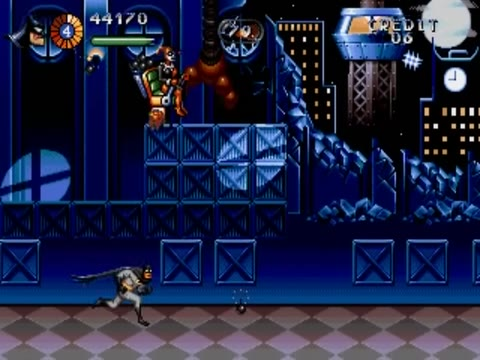
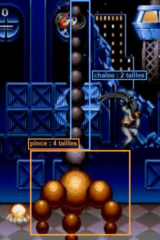

Section 2 : Gem Expo & bras de grue
Une exposition de joyaux construite en modules, un entrepôt en escaliers de caisses, puis le morceau de bravoure technique du niveau : le grappin de grue en sphères qui plonge dans la profondeur.
Le Gem Expo en modules

La même salle revient plusieurs fois : colonnes de marbre, bannière « GEM EXPO », vitrines, plantes en pot, horloges (6:24, 7:28, 8:32). Elle alterne avec une salle à grandes baies vitrées sur la skyline (7:51).
Une cartouche de 1995 n'a pas la place de stocker un décor unique de plusieurs milliers de pixels. Les niveaux sont faits de blocs (métatuiles) et de salles réutilisés. Ici, la répétition n'est pas une paresse : c'est une contrainte de mémoire transformée en rythme.
Dans Godot, une salle est une scène (expo_hall.tscn, expo_windows.tscn) qu'on instancie bout à bout dans la section. Corriger un détail dans la scène de la salle le corrige partout. Les arènes et les ennemis restent dans la scène de section : chaque instance de salle peut accueillir un combat différent.
S2GemExpo (Node2D, section.gd) next_scene = s3_convoy.tscn ├── Skyline (Parallax2D) scroll_scale (0.3, 0) · repeat_size = largeur de l'image ├── World │ ├── Hall1 (expo_hall.tscn) x = 0 │ ├── Windows1 (expo_windows.tscn) x = 640 │ ├── Hall2 (expo_hall.tscn) x = 1280 │ ├── … │ ├── ArenaA (WaveArena) vague 1 : clowns ; vague 2 : formation de têtes à hélice │ ├── … │ ├── Warehouse (warehouse.tscn) caisses (TileMapLayer couche 1) │ ├── HarleyFlyby (Area2D) passage d'Harley en annonce │ └── BossArena → CraneHarley ├── EnemyBullets (Pool) · Player · Camera · HUD
- Vitrines : des comptoirs bas, en
StaticBody2Done-way (couche 2) : on peut sauter dessus. - Vitres des baies : des
Breakableavecbroken_texture: le trou en étoile reste affiché. - Colonnes : elles font partie du décor de fond de chaque salle, au même plan que le mur : la mesure le confirme et Batman passe devant elles (voir tome 06). Pas besoin de couche à part.
Les vagues de têtes à hélice
Pour la grande vague de 6:52–7:13, place deux Formation (tome 05) dans l'arène :
- « Chenille » : une courbe qui descend à la verticale depuis le haut de l'écran, puis serpente vers la gauche. 8 membres,
delay0,3 s. - « Ligne » : une courbe horizontale en haut de l'écran, de droite à gauche. 6 membres,
delay0,25 s.
Relie la première au champ formation de la vague 1 et la seconde à la vague 2. Les deux courbes se dessinent à la souris : c'est là que se joue tout le rythme de la scène.
L'entrepôt

Les pyramides de caisses sont des blocs pleins (couche 1) dans une TileMapLayer : Batman doit sauter de marche en marche, et les ennemis au sol butent dessus, ce qui crée des positions de tir intéressantes. Pense à des tuiles de 16×16, la hauteur d'une caisse à l'écran.
Harley passe : une annonce en pleine partie
À 9:25–9:29, Harley traverse l'écran en diagonale dans son fauteuil-fusée, sans combattre. Le joueur sait désormais qui l'attend.
TweenUn Tween anime une propriété d'une valeur à une autre sur une durée, avec une courbe d'accélération. Pour une animation scriptée simple, c'est plus court qu'un AnimationPlayer et plus lisible qu'un calcul à la main dans _process. Il est créé sur le nœud animé (h.create_tween()) : si ce nœud disparaît, le tween s'arrête avec lui.
Le mini-boss : Harley et le grappin de grue


- Des sphères : vue sous n'importe quel angle, une sphère reste un disque avec son reflet au même endroit. Pas besoin de rotation.
- Environ 20 sphères, chacune un sprite matériel.
- 4 tailles de sphère orange et 2 de sphère noire, pré-calculées : pas de mise à l'échelle.
- « Il faut des maths pour savoir comment le bras bouge » : une vraie position 3D, projetée à l'écran.
- Quand le bras part vers le fond, il s'assombrit : la palette est mise à jour en direct, à chaque image.
La projection perspective en 4 lignes

On décrit le bras en 3D (x à droite, y vers le bas, z vers le fond de l'écran). Pour l'afficher, on divise par la profondeur : un point deux fois plus loin paraît deux fois plus petit et deux fois plus proche du centre. Avec une « focale » f : s = f / (f + z), puis écran = (x, y) × s. Le facteur s donne aussi la taille apparente et, ici, la luminosité. C'est toute la « 3D » du jeu.
CraneHarley (Node2D, crane_harley.gd) score_value = 5000 · placé en haut-centre de l'arène
├── Health max_health = 80 (À CALIBRER)
├── Arm (Node2D, sphere_arm.gd) origine = point d'accroche de la chaîne (haut de l'écran)
│ └── ClawHitbox (Hitbox) masque 5 · damage 2
│ └── CollisionShape2D cercle de rayon 14
└── Harley (Node2D, harley_chair.gd)
├── Sprite2D matériau hit_flash
├── Hurtbox couche 6 · health = ../../Health
│ └── CollisionShape2D
└── HitFlash
Sans tampon de profondeur, on dessine du plus lointain au plus proche, comme un peintre qui pose le fond avant les personnages. Ici, z_index = -z laisse Godot faire ce tri. Sur Mega Drive, l'ordre de la table des sprites jouait ce rôle, et le programme la triait à chaque image.
La projection se fait autour du point d'accroche et non du centre de l'écran : c'est plus simple et visuellement suffisant. La luminosité passe par modulate ; pour une fidélité totale, utilise des sphères indexées et indexed.gdshader (tome 06) avec une palette de 4 lignes. Tu n'as pas encore les sprites ? Dessine 4 disques de 8, 12, 16 et 20 px avec un reflet en haut à gauche : la sphère est l'objet le plus facile à faire en pixel art.
Harley et son fauteuil-fusée
Le grappin ne fait mal que lorsqu'il est dans le plan du joueur (|z| < 12) et qu'il frappe. Quand il passe dans le fond, il est plus petit, plus sombre et inoffensif : le visuel dit la vérité sur le gameplay. Une règle d'or de la pseudo-3D : ce qui a l'air loin ne doit pas toucher.
- Le Gem Expo s'assemble avec deux salles réutilisées, colonnes comprises.
- Une chenille de têtes à hélice descend puis serpente ; une ligne traverse le haut de l'écran.
- Dans l'entrepôt, Harley passe en diagonale sans combattre.
- Le grappin suit Batman, s'abat, se referme, remonte et parfois s'enfonce dans le fond, plus petit et plus sombre.
- Harley vole et lobe des bombes. À 00 : vrille, crash, K.O., +5 000, section 3.